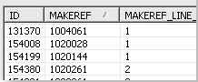

The SQL Editor provides the following features:
The SQL Editor is divided into two halves - the top half contains your SQL quer(ies) while the bottom half (the results half) shows the results of executing them against your database.
The results half contains a tab for the results of each query executed (by default any existing tabs are removed each time you execute the query but you can change this in Preferences), with a further tab for messages returned by the server.
The columns are sortable by clicking on the column header.
Different export options are available to export the query results.

Where a query returns messages from the server (for example, Stored
Procedures) the messages tab is used to provide more information:
In the screenshot above, the message tab shows the typical results of executing a stored procedure against a database (in this case Oracle) where the procedure has errors. In this particular query there are no result sets so there is only the Messages tab, in which it lists each message with a status, text position, a snippet of the SQL that was executed (where appropriate) and the text of the error message. Clicking on a line in the Messages tab takes you to the line of text in the query which caused the error.
NOTE: in this example you can see some new features in SQLExplorer v3.5.0 - the two comments at the top of the query which begin "${define" are Structured Comments, which are special comments which introduce additional commands to SQLExplorer without introducing proprietary extensions into your SQL scripts. The Structured Comments feature introduces conditional compilation and macros, while upcoming features include prompting for values, locale independance, overriding content types, and scripted import and export).